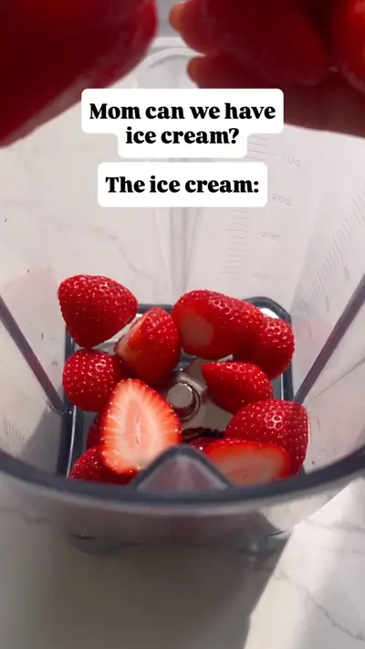

Protein packed strawberry ice cream

Ingredients
- 2 cups frozen strawberries
- 1¼ cups 4% cottage cheese or Greek yogurt
- 1 tbsp maple syrup
- 1 tsp vanilla extract
- Pinch of sea salt
Steps
- Add the frozen strawberries, cottage cheese / Greek yogurt, maple syrup, vanilla, and salt to a high-speed blender or food processor.
- Blend until completely smooth and creamy, stopping to scrape down the sides as needed.
- Serve immediately for a thick, creamy soft-serve consistency, or transfer to a freezer-safe container and freeze for 30-60 minutes for a firmer, scoopable texture.
- If freezing for several hours or overnight, let the ice cream soften at room temperature for 10-20 minutes before scooping.
- Top with fresh strawberries if desired and enjoy!
Recipe text as written by @thepickyeater on Instagram. Open original